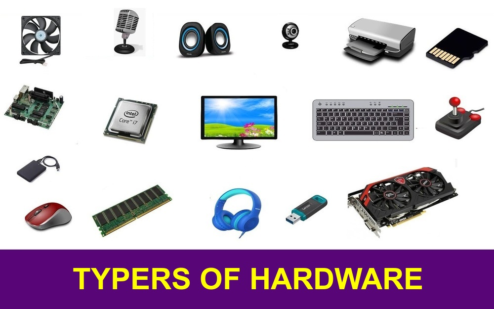

Componentes clave
Un smartphone moderno integra un SoC con CPU y GPU, memoria RAM, almacenamiento flash, batería, pantallas táctiles y múltiples sensores.
Las limitaciones de batería y memoria influyen directamente en cómo se diseñan las apps móviles y su consumo de recursos.
